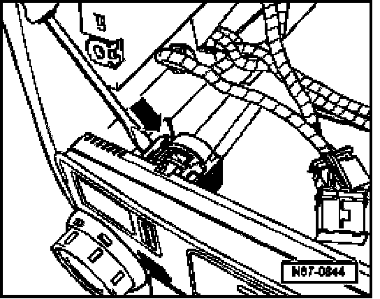

Procedures
Climatronic Control Module -J255- With A/C Control Head, Removing And Installing
Removing
CAUTION:
Before beginning repairs on the electrical system:
- Determine system or component fuse/fuses using applicable wiring diagram.
- Remove system or component fuse/fuses.
- Remove radio/navigation unit
- Remove outer switches or switch blanks from switch panel.
NOTE: Illustration shows switch panel removed.

- Press lock in direction of -arrow- and slide control module out from instrument panel.
- Disconnect electrical connection.
Installing
Install in reverse order of removal, noting the following:
CAUTION: In the event of a collision where occupants may make contact with interior trim, some interior knobs and buttons are designed to break away in a controlled manner in order to protect the occupant. When installing the A/C control head, do not press on control buttons or display in order to engage locking tabs. Damage will result.
If climatronic control module was replaced, initiate basic setting and code control module.
Climatronic Components, Checking and Adjusting With VAS 5051